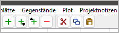

nv_clipboard
Benutzerhandbuch
Diese Seite gilt für die neueste Ausgabe von nv_clipboard. Sie können sie mit Hilfe > Zwischenablage Online-Hilfe öffnen.
Das Plugin fügt der novelibre-Werkzeugleiste drei neue Schaltflächen hinzu, Außerdem den Eintrag Zwischenablage Online-Hilfe im Hilfe-Menü.

Vom Zwischenablage-Plugin hinzugefügte Werkzeugleisten-Schaltflächen
Das ausgewählte Element aus dem Baum in die Zwischenablage verschieben.
Dasselbe wie Strg-X.
Das ausgewählte Element in die Zwischenablage kopieren.
Dasselbe wie Strg-C.
Das Element aus der Zwischenablage in den Baum einfügen.
Dasselbe wie Strg-V.
Sie können die folgenden Baumelemente über die Zwischenablage kopieren und einfügen:
Teile und Kapitel,
Abschnitte,
Stadien,
Plotlinien,
Plotpunkte,
Figuren,
Schauplätze,
Gegenstände,
Projektnotizen.
Hinweis
Falls mehrere Elemente markiert sind, wird nur das erste kopiert. Hat das Element jedoch „Kinder“, werden diese auch kopiert und eingefügt.
Achtung
Beziehungen werden beim Kopieren oder Verschieben in die Zwischenablage nicht mitgenommen. Das gilt auch für die Abschnitts-Perspektive und für Plotlinien/Plotpunkte.